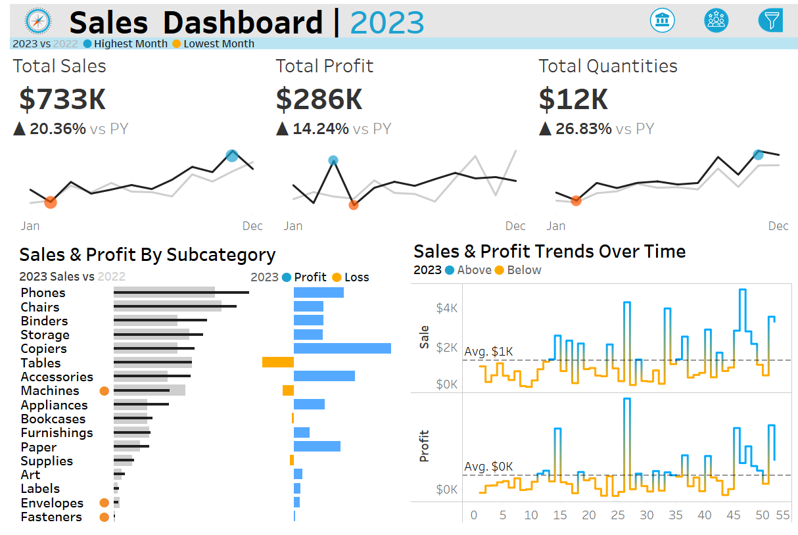
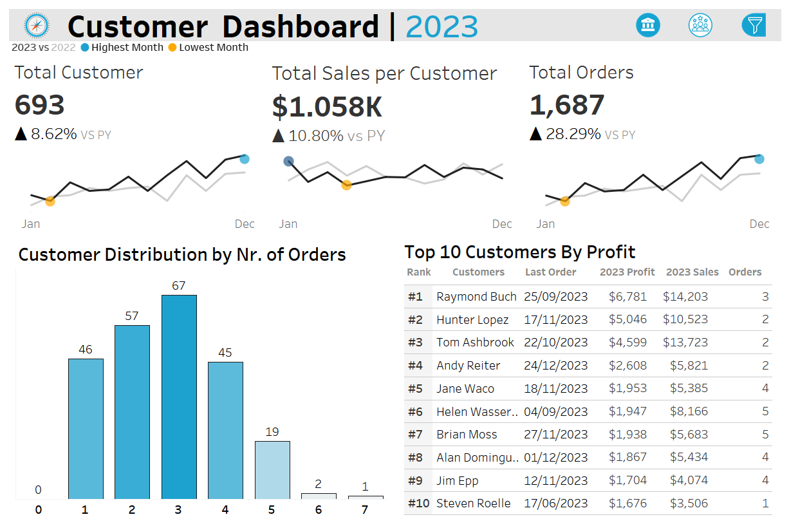

Sales Performance Dashboard
Sales Performance Dashboard
Project Overview
The Sales Performance Dashboard provides a data-driven approach to analyzing sales, profit, orders, and customer trends. It enables business stakeholders to track revenue growth, compare year-over-year (YoY) performance, and identify actionable insights for business strategy optimization
Business Problems Addressed
- Comparing Sales Performance Over Time – Identify whether sales, profit, and customer engagement are increasing or decreasing.
- Identifying Peak and Low-Performing Periods – Highlights best and worst-performing months to optimize marketing and inventory planning.
- Tracking Customer Retention – Analyze whether the customer base is growing or declining.
- Detecting Declining Trends – Flags months where orders, sales, or profit dropped compared to the previous year.
- Optimizing Business Strategies – Provides actionable insights to improve sales performance.
Steps Taken in the Analysis
Data Preparation
- Extracted historical sales transaction data.
- Ensured date formats and sales/profit figures were correctly structured.
- Cleaned and formatted customer and order data to remove inconsistencies.
Data Transformation
- Created calculated fields for CY (Current Year) and PY (Previous Year) metrics.
- Added filters for year selection to allow dynamic analysis.
- Applied window functions to identify min/max sales, orders, and profit over time.
Data Modeling
- Established relationships between Sales Data and Date Table.
- Optimized calculations for faster performance in Tableau.
Dashboard Preview
The Sales Performance Dashboard consists of:
- Total Sales Over Time – Line chart comparing CY vs. PY sales trends.
- Min/Max Sales Indicator – Highlights best and worst months for revenue.
- Sales Growth Indicator – KPI displaying positive or negative growth from last year.
- Profitability Tracker – Bar chart comparing CY vs. PY profits to detect trends.
- Customer Trends – Shows how many customers returned or dropped off compared to last year.
- Underperforming Sales Alerts – Flags months where CY sales drop below PY sales.
Dashboards preview:
 Step 1: First Calculate CY (Current Year) and PY (Previous Year)
Before calculating KPIs, we first extract CY (Current Year) and PY (Previous Year) data for Sales, Orders, Profit, and Customers.
CY and PY Sales Calculation
PY Sales = IF YEAR([Order Date]) = YEAR(TODAY())-1, [Sales], 0
CY and PY Orders Calculation
PY Orders = IF YEAR([Order Date]) = YEAR(TODAY())-1, COUNTD([Order ID])
CY and PY Profit Calculation
PY Profit = IF YEAR([Order Date]) = YEAR(TODAY())-1, [Profit], 0
CY and PY Customers Calculation
PY Customers = IF YEAR([Order Date]) = YEAR(TODAY())-1, COUNTD([Customer ID])
Step 2: Calculate Percentage Changes (YoY Comparisons)
% Difference in Sales (YoY Growth Rate)
(IF SUM([PY Sales]) = 0 THEN BLANK()
ELSE (SUM([CY Sales]) - SUM([PY Sales])) / SUM([PY Sales])) * 100
% Difference in Orders
(IF SUM([PY Orders]) = 0 THEN BLANK()
ELSE (SUM([CY Orders]) - SUM([PY Orders])) / SUM([PY Orders])) * 100
% Difference in Profit
(IF SUM([PY Profit]) = 0 THEN BLANK()
ELSE (SUM([CY Profit]) - SUM([PY Profit])) / SUM([PY Profit])) * 100
% Difference in Customers
(IF SUM([PY Customers]) = 0 THEN BLANK()
ELSE (SUM([CY Customers]) - SUM([PY Customers])) / SUM([PY Customers])) * 100
Summary of Why We Do These Calculations
| Metric | CY Formula | PY Formula | % Change Formula | Why Important? |
|---|---|---|---|---|
| Sales | CY Sales = SUM([Sales]) | PY Sales = SUM([Sales]) | (CY - PY) / PY * 100 | Tracks revenue growth and business performance |
| Orders | CY Orders = COUNTD([Order ID]) | PY Orders = COUNTD([Order ID]) | (CY - PY) / PY * 100 | Measures demand and customer activity |
| Profit | CY Profit = SUM([Profit]) | PY Profit = SUM([Profit]) | (CY - PY) / PY * 100 | Ensures profitability and cost control |
| Customers | CY Customers = COUNTD([Customer ID]) | PY Customers = COUNTD([Customer ID]) | (CY - PY) / PY * 100 | Monitors customer retention and acquisition trends |
| Min & Max Sales | WINDOW_MIN/MAX(SUM([CY Sales])) | — | — | Identifies best and worst-performing sales months |
| Min & Max Orders | WINDOW_MIN/MAX(SUM([CY Orders])) | — | — | Finds peak and low demand periods |
| Min & Max Profit | WINDOW_MIN/MAX(SUM([CY Profit])) | — | — | Tracks profitability fluctuations |
| Min & Max Customers | WINDOW_MIN/MAX(SUM([CY Customers])) | — | — | Helps analyze customer engagement trends |
Insights & Recommendations
- Revenue Trends: If sales are declining, explore marketing & promotional strategies.
- Customer Retention: If returning customers are low, introduce loyalty programs.
- Profitability: If profit margins are shrinking, review pricing and cost structures.
- Seasonal Peaks & Lows: Adjust inventory and staffing based on historical trends.
Conclusion
The Sales Performance Dashboard is a powerful tool for businesses to monitor revenue growth, analyze trends, and make data-driven decisions. It provides clear, actionable insights that help optimize strategies, improve profitability, and enhance customer retention.